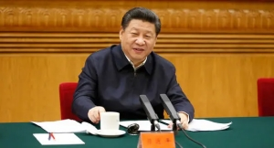
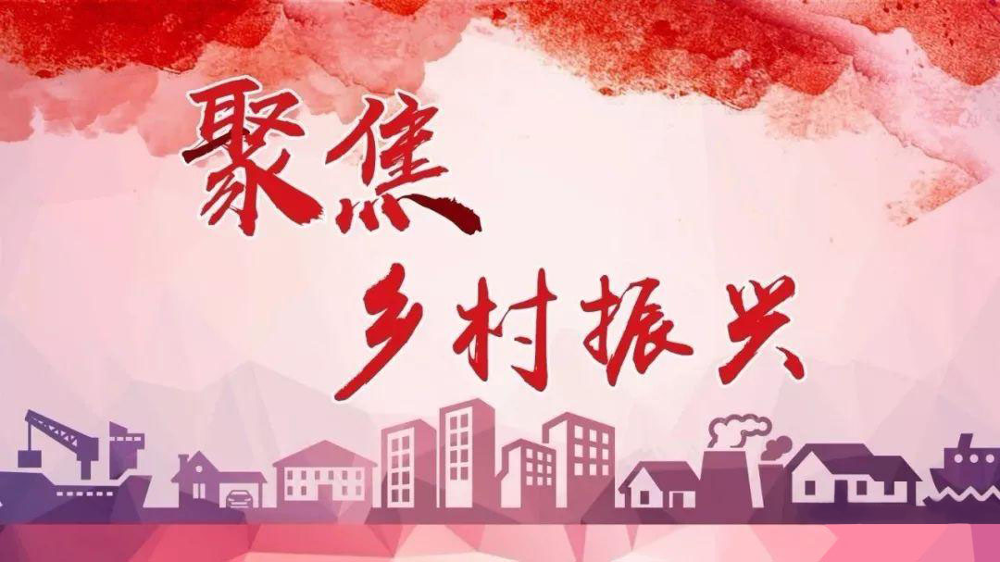
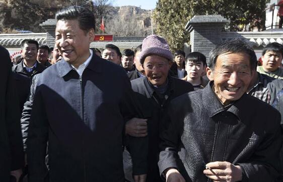
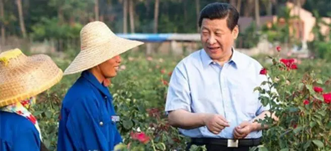
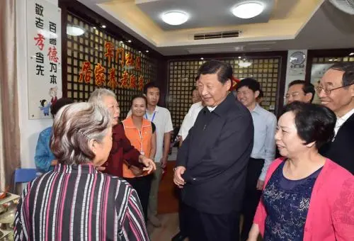

商务合作 QQ:340833389
抖音:28637558005
 意见反馈
意见反馈
- 
- 
- 
- 
- 
政治要闻
- 1.习近平:把实施乡村振兴战略摆在优先位置 2021-06-19
- 2.接好“接力棒” 跑好“接力赛”元谋法院乡村振兴工作队员活跃农村 2021-06-18
- 乡村建设行动关键在行动 2021-06-17
- “助力三农、振兴乡村” 2021首届（BGVF）博鳌绿谷论坛成功举办 2021-06-17
- 国家发展改革委下达农村产业融合发展示范园建设2021年中央预算内投资计划 2021-06-15